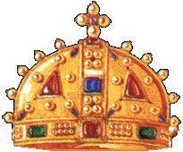

Osvajacko pohod kralja Dusana i uspesna osvajanja vizantijske teritorije bez sumnje su doprineki ideje o carstvu.
Pojedini istoricari veruju da je ceremonica proglasenja obavljena na bozic 1345. godineu Seru, gde je sa suprugom proveo zimu 1345/46 godine
Svecano carsko krunissanje obavljeno je u Skoplju, na Uskrs 16. aprila 1346. godine.

zauzima misljenje da je cilj Dusanove carske ideologije bilo zauzimanje Carigrada i formiranje novog, srpsko-grckog carstva.
Njegove poslednje godine i smrt mozete pronaci na sledecem linku